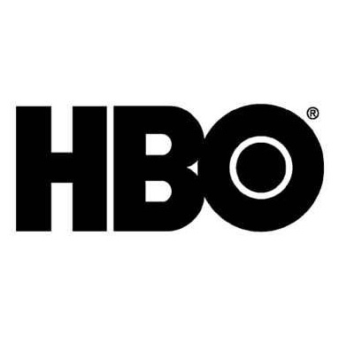
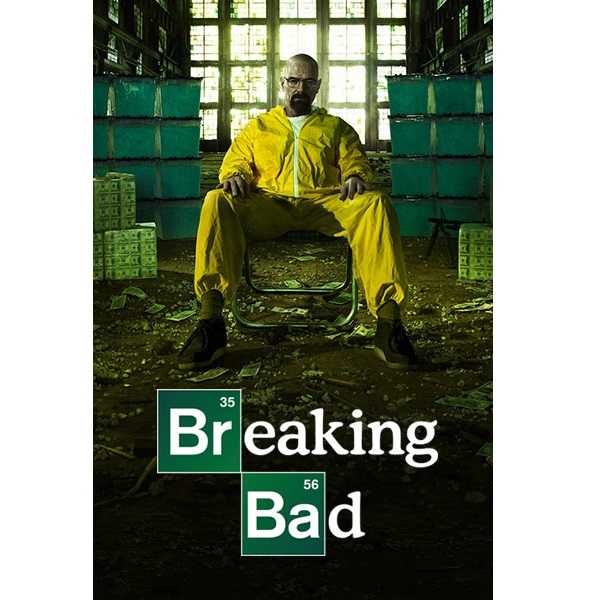
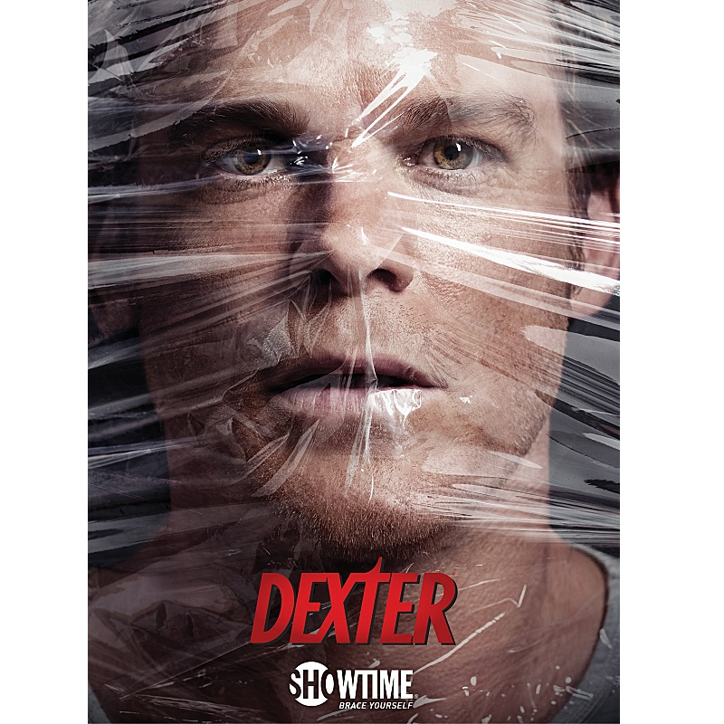
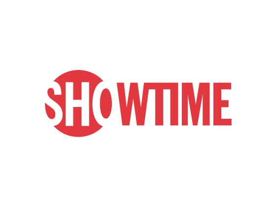
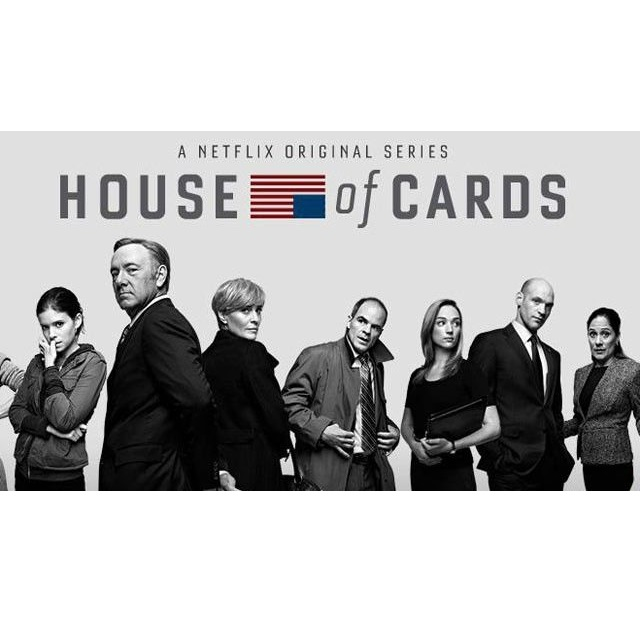
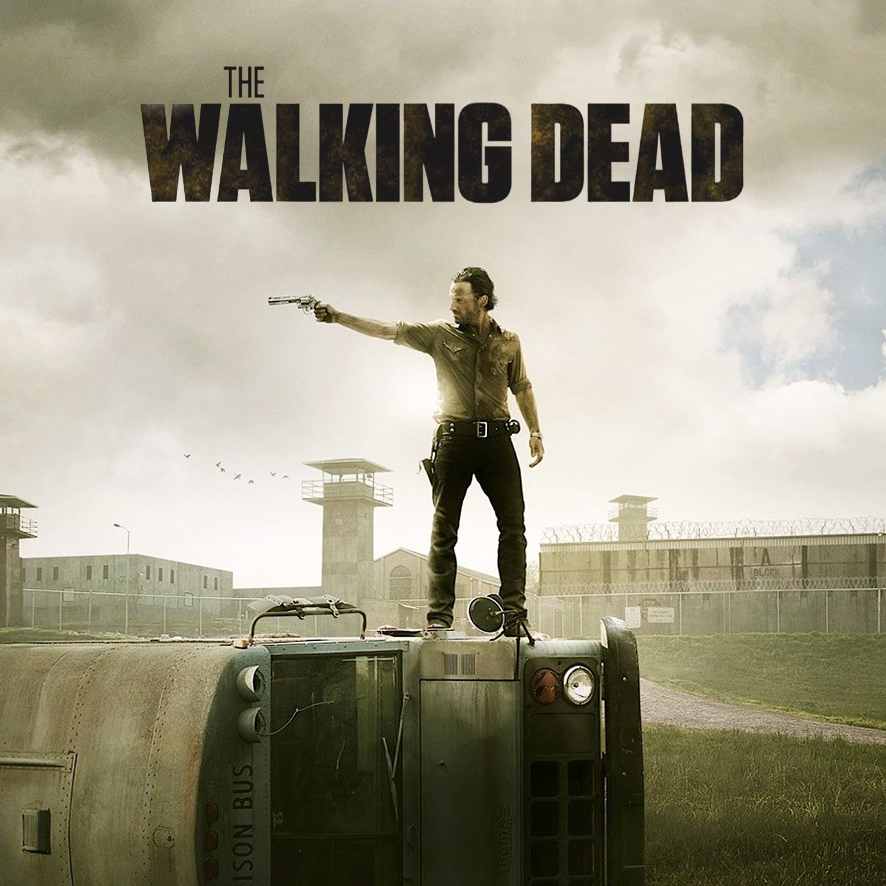
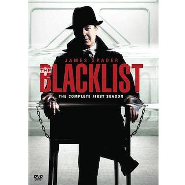
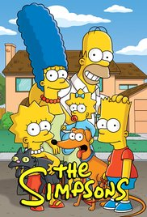
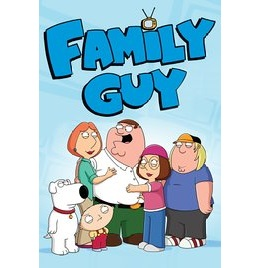
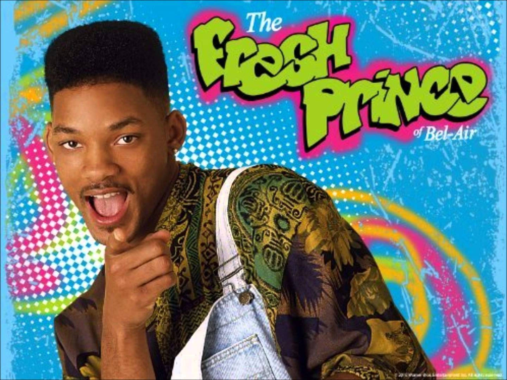

| 1. 100% MUST see | |||
|---|---|---|---|
|
 | Series Name: Game of Thrones | |
| Network: HBO | |||
| Seasons: 7 | |||
| Why it's a must see: Game of Thrones is the go-to when talking about TV in 2017. A story based on novels combines brilliant acting with the production value of premium TV. | |||
| 2. Another MUST see | |||
|---|---|---|---|
|  | Series Name: BREAKING BAD | ||
| Network: AMC | |||
| Seasons: 5 | |||
| Why it's a must see: Breaking bad is one of the highest rated basic cable dramas. A high school chemistry teacher discovers he has cancer and begins making meth to pay for his bills and his kids' future. | |||
| 3. Have to also watch | |||
|---|---|---|---|
|  |  | Series Name: Dexter | |
| Network: Showtime | |||
| Seasons: 8 | |||
| Why it's a must see: Dexter has season after season of following a vigilante serial killer who works for Miami Metro. Whether he is hunting or being hunted, the show will keep you on your toes. | |||
| 4. A really good series | |||
|---|---|---|---|
|  | Series Name: House of Cards | ||
| Network: Netflix | |||
| Seasons: 5 | |||
| Why it's a must see: Kevin Spacey's portrayal of Frank Underwood in this politically themed drama got him and House of Cards nominated for multiple awards. This dark show combines murder and power into an epic tale of ruthless sociopaths. | |||
| 5. In the top 5 | |||
|---|---|---|---|
|  | Series Name: The Walking Dead | ||
| Network: AMC | |||
| Seasons: 7 | |||
| Why it's a must see: The Walking Dead is the end result of a culture obsessed with zombies. When Rick Grimes wakes up from a coma to find the world in ruins, his first thought is to find his family... and avoid flesh eating monsters. | |||
| 6. One of my favorites | |||
|---|---|---|---|
|  | Series Name: The Blacklist | ||
| Network: NBC | |||
| Seasons: 5 | |||
| Why it's a must see: The Blacklist follows the story of Raymond "Red" Reddington a criminal mastermind on the FBI's most wanted list, who turns the FBI into another tool for his empire - by turning himself in. | |||
| 7. Everyone loves this | |||
|---|---|---|---|
 |
Series Name: The Office | ||
| Network: NBC | |||
| Seasons: 9 | |||
| Why it's a must see: The Office is an award winning comedy classic. Following the dying business of a paper company in Scranton, The Office fins a way to make the office idea more than entertaining. | |||
| 8. A classic show | |||
|---|---|---|---|
|  | Series Name: The Simpsons | ||
| Network: FOX | |||
| Seasons: 28 | |||
| Why it's a must see: The Simpsons now is well known as a multi-generation animated comedy not only in America but worldwide. Homer, Marge, Bart, Lisa and Maggie have been long time comedy icons. | |||
| 9. If you become really bored | |||
|---|---|---|---|
|  | Series Name: Family Guy | ||
| Network: FOX | |||
| Seasons: 16 | |||
| Why it's a must see: Family guy continues on the success of the Simpsons and with its own unique characters and stories. It has create it's own success from following in the footsteps of the Simpsons, but still continuing to be unique and diffrent in it's own way. | |||
| 10. Last but not least | |||
|---|---|---|---|
|  | Series Name: Fresh Prince of Bel-Air | ||
| Network: NBC | |||
| Seasons: 6 | |||
| Why it's a must see: The Fresh Prince revolves around Will Smith a West Philadelphia teen who moves in with his Aunt and Uncle in Bel-Air. The show is usually funny, but tackles real situations from police racism to fatherless children. The most important thing about the show is the legendary theme song. | |||